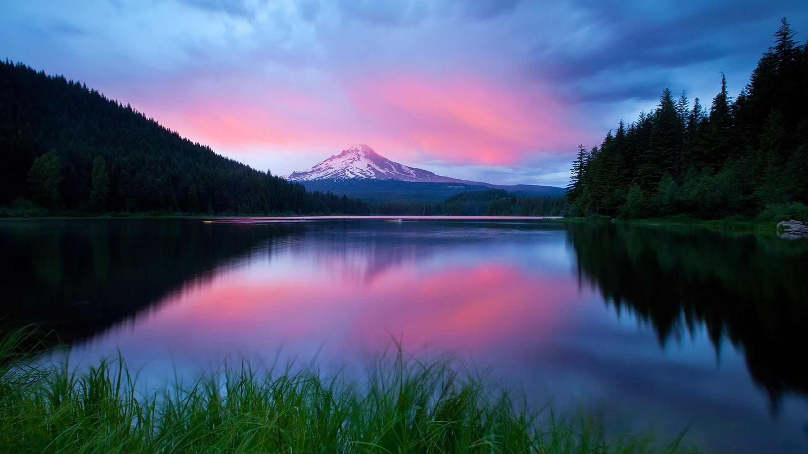
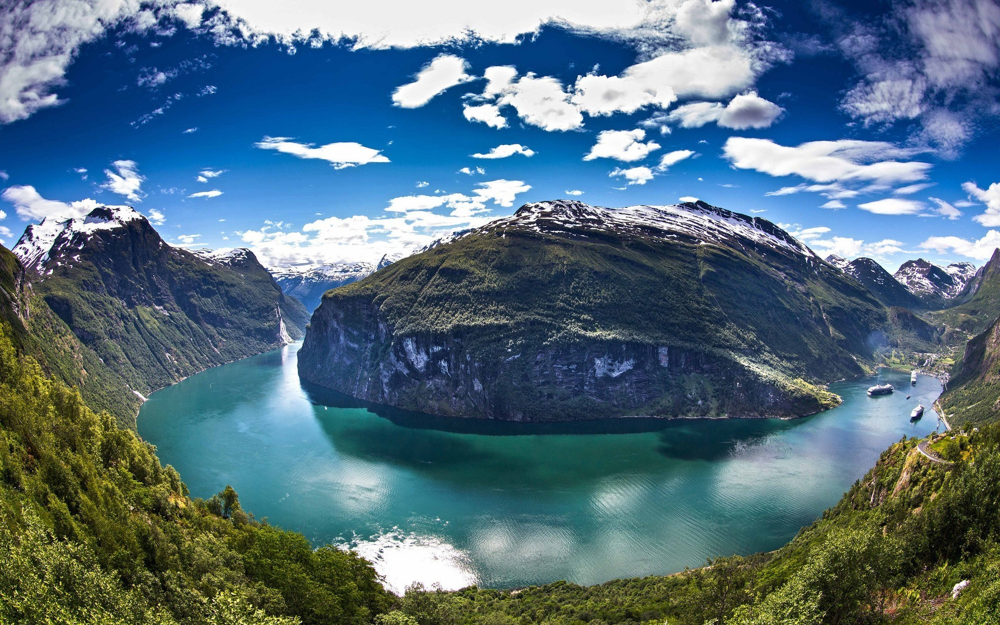

Fjord
Geologically, a fjord or fiord is a long, narrow inlet with steep sides or cliffs, created by glacial erosion. There are many fjords on the coasts of Alaska, British Columbia, Chile, Greenland, Iceland, the Kerguelen Islands, New Zealand, Norway, Labrador, Nunavut, Newfoundland, and Washington state.
Formation
A fjord is formed when a glacier cuts a U-shaped valley by ice segregation and abrasion of the surrounding bedrock. Glacial melting is accompanied by the rebounding of the Earth's crust as the ice load and eroded sediment is removed (also called isostasy or glacial rebound). In some cases this rebound is faster than sea level rise. Most fjords are deeper than the adjacent sea; Sognefjord, Norway, reaches as much as 1,300 m (4,265 ft) below sea level. Fjords generally have a sill or shoal (bedrock) at their mouth caused by the previous glacier's reduced erosion rate and terminal moraine. In many cases this sill causes extreme currents and large saltwater rapids (see skookumchuck). Saltstraumen in Norway is often described as the world's strongest tidal current. These characteristics distinguish fjords from rias (e.g. the Bay of Kotor), which are drowned valleys flooded by the rising sea.
